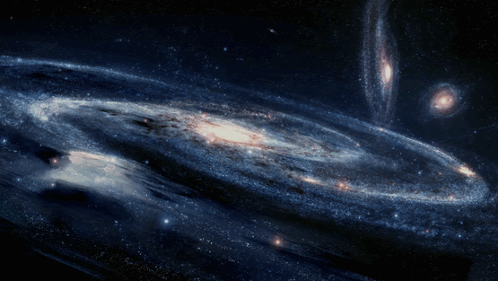

¿Cual es el origen del universo?

Teoría más conocida sobre el origen del universo se centra en un cataclismo cósmico sin igual en la historia: el Big Bang. Esta teoría surgió de la observación del alejamiento a gran velocidad de otras galaxias respecto a la nuestra en todas direcciones, como si hubieran sido repelidas por una antigua fuerza explosiva.
Con el exitoso lanzamiento y despliegue del telescopio espacial James Webb la comunidad científica pretenden obtener más datos sobre el origen del universo. Con esta nueva herramienta en el espacio, los astrónomos pretenden buscar en el universo, tanto en el espacio como en el tiempo, cosas nunca vistas antes. Y en 2023, estas observaciones ya han dado sus frutos y permitido a los científicos saber más sobre el pasado del universo.
En abril de 2023, la Agencia Espacial Europea anunció que ya tenían pruebas de siete galaxias que serían más antiguas conocidas hasta la fecha. Según los astrónomos, estas formaciones de estrellas datarían de 650 millones de años después del Big Bang los que "las haría las galaxias más tempranas que se han podido confirmar espectroscópicamente".